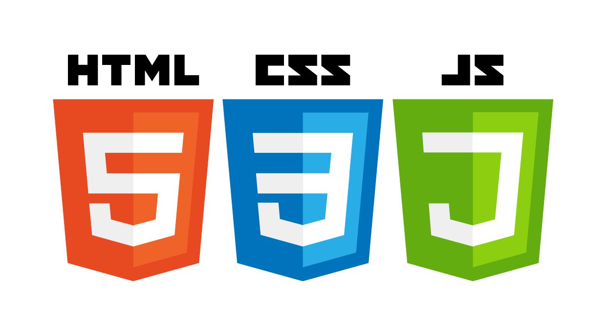

Let's go to the beginning
let's go to the beginning of training and the concept of what IT is?Many people think that it is very difficult to do it , but I will try to explain to you that it is easier than easy . For example, people think that IT is when you sit for days and nights at your gadget without getting up from the chair.I'm afraid you'll be disappointed that this is actually not the case . To start any job, you need to have a living . You do not need to think from the first days that IT is a way of earning money and that you will earn after the first study of a million dollars . You need to think before you start studying
